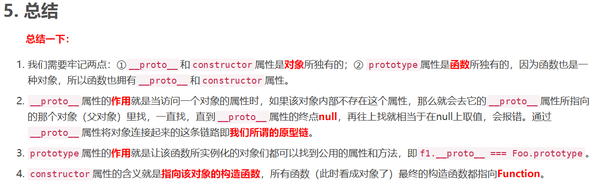
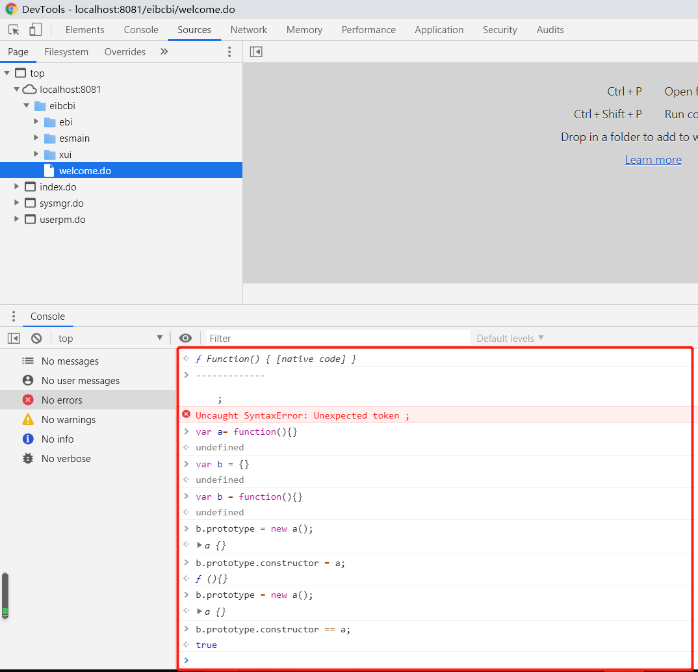

JavaScript也是可以“继承”的！
各位看官或是好奇，或是一知半解。什么是prototype，__proto__，constructor、哪种继承方式好。今天就在这交流交流。
https://blog.csdn.net/cc18868876837/article/details/81211729 （尊重原作者，这是篇超级好的文章，一定要点进去细细研读）
上面文章已经讲的很明白了，最后对文章总结再解释一下

第一点主要强调，我们拿到一个对象，主要看它什么，因为JavaScript中一切都是对象，所以在理解的时候很容易因为它有其他变量也混淆，所以我们研究一个对象，首先要确定我们的目标是什么，如果目标是对象，则抓住__proto__和constructor属性，如果目标是函数则抓住prototype属性，这样才能快速找到自己想要的东西解决问题。
第2,3,4点是关于哪种继承方式好的关键，一定要弄懂，下面再解释一下new关键词做了什么（没准你不懂上面文章写的，看懂我的例子）。
1 //例如
2 var child = new Parent();
3
4 //上面这句代码就等于下面三句
5 var child = {};
6 child.__proto__ = Parent.prototype;
7 Parent.call(child);咳咳，就跟教育孩子一样，孩子出生是张白纸（var child = {}），然后继承了父母的一些行为（就是方法），例如怎么说话啊，喜欢吃什么啊（child.__proto__ = Parent.prototype;），最后得到父母的一些人生经验，就是复制了属性变量（Parent.call(child)）。
这里需要注意，孩子是不能生孩子的，即
var child2 = new child()绝对报错的，对象是对象，并不是函数，也不会变成函数。
继承能够代码复用，能让逻辑更清晰，所以是很有必要的，那怎么样继承效果最好呢
https://www.cnblogs.com/humin/p/4556820.html#（尊重原作者，这是篇超级好的文章，一定要点进去细细研读，这话好像有点熟悉）
推荐给大家一个方法，打开谷歌浏览器，按F12，在里面可以进行简单的练习

文章最好从第一个继承开始，就自己动手模拟一下，看看变量的__proto__和prototype到底指什么
而且从第一个继承方法演变到最完美的一个，这个思考过程是十分重要的。
我来再解释一下最完美的继承模式：寄生组合继承
1 function Cat(name){
2 Animal.call(this);
3 this.name = name || 'Tom';
4 }
5 (function(){
6 // 创建一个没有实例方法的类
7 var Super = function(){};
8 Super.prototype = Animal.prototype;
9 //将实例作为子类的原型
10 Cat.prototype = new Super();
11 })();
12
13 // Test Code
14 var cat = new Cat();
15 console.log(cat.name);
16 console.log(cat.sleep());
17 console.log(cat instanceof Animal); // true
18 console.log(cat instanceof Cat); //true
19
20 感谢 @bluedrink 提醒，该实现没有修复constructor。
21
22 Cat.prototype.constructor = Cat; // 需要修复下构造函数第7-10行的代码为什么这样做
通过寄生方式，砍掉父类的实例属性，这样，在调用两次父类的构造的时候，就不会初始化两次实例方法/属性，避免的组合继承的缺点 这句话什么意思
回到刚才对new的解释，假设如组合5：组合继承一样
1 function Cat(name){
2 Animal.call(this);
3 this.name = name || 'Tom';
4 }
5 Cat.prototype = new Animal();
第5行代码相当于：
Cat.prototype = {}
Cat.prototype.__proto__ = Animal.prototype
Animal.call(Cat.prototype) //这一步是多余的并不需要
所以 var Super = function(){}; 一个空方法来代替，因为只需要
Cat.prototype.__proto__ = Animal.prototype 就可以了而现在Super.prototype = Animal.prototype 因此这个方法是最完美的
以上就是本次内容的分享，感谢各位老哥的阅读